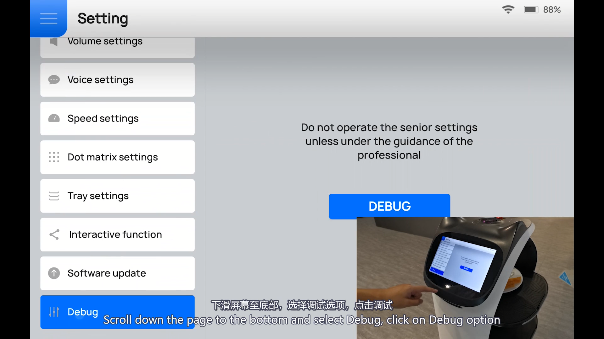
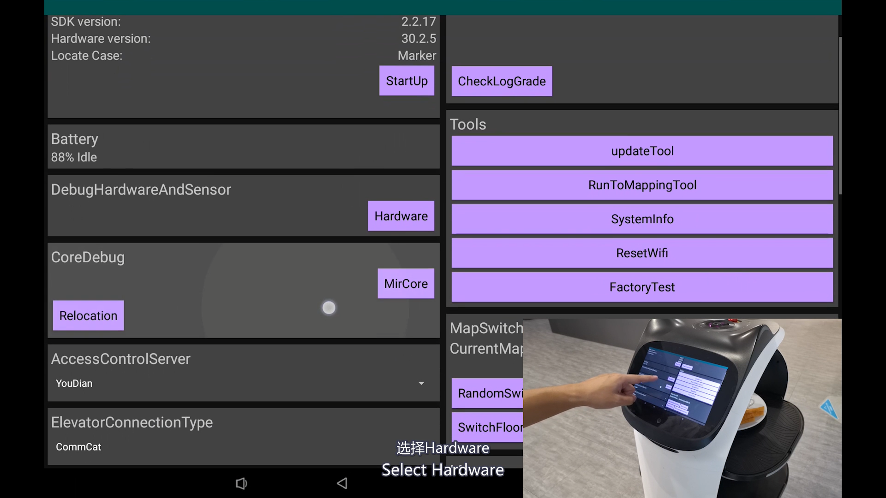
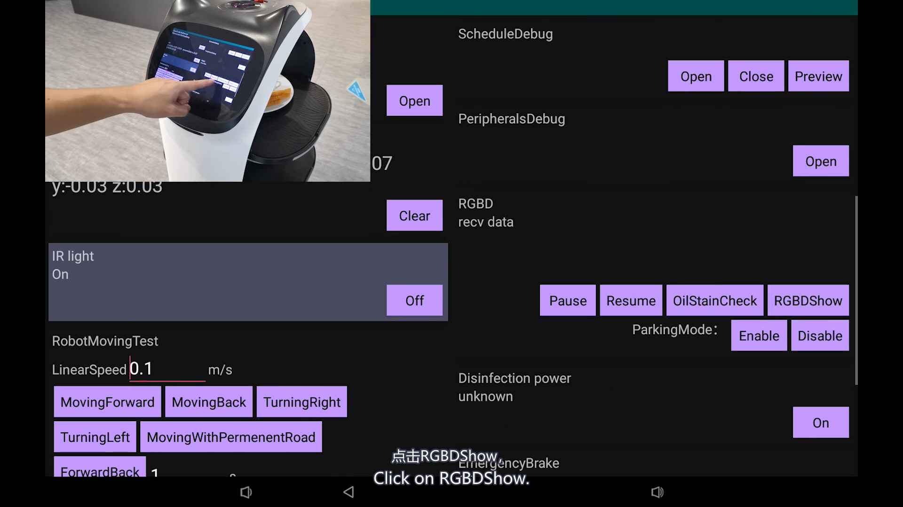
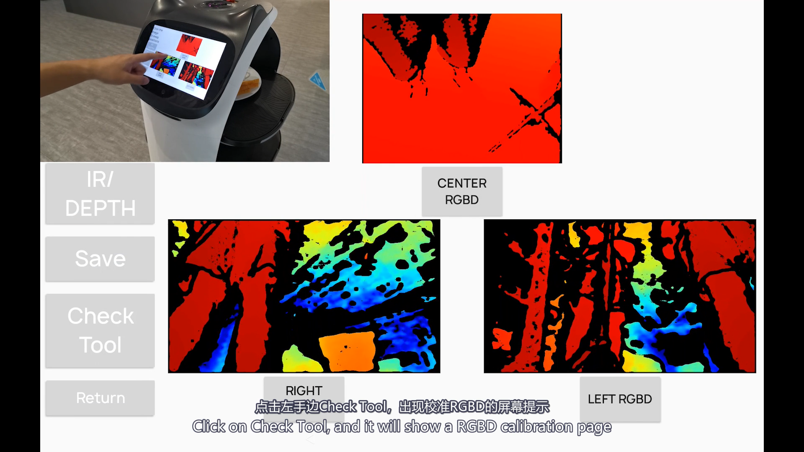
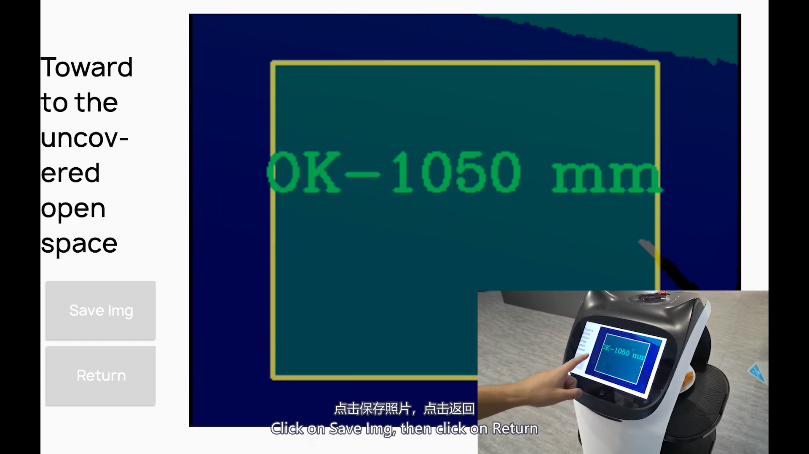
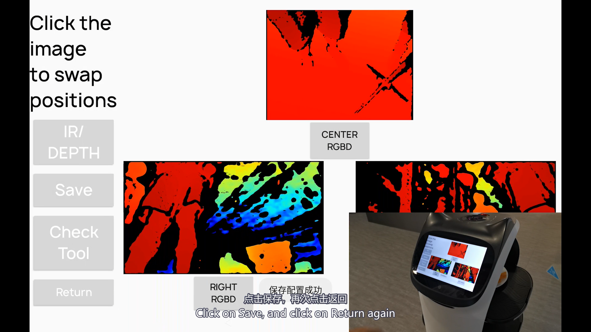
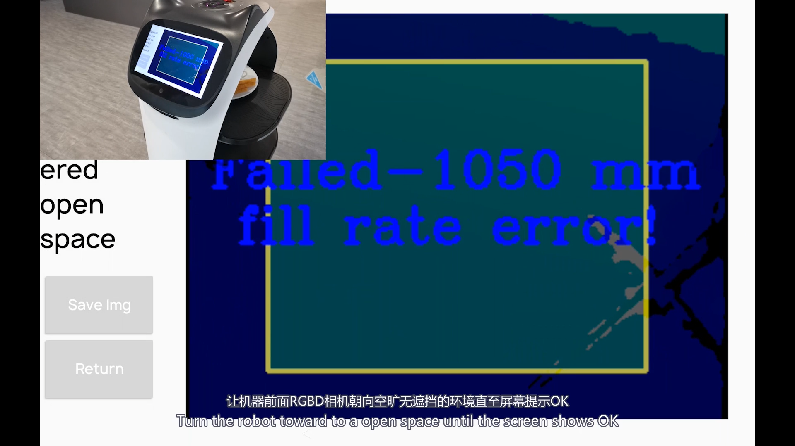

暂停配送任务，确保机器人不会自行移动，并留出推动或旋转机器人的空间。
Before you start
操作前准备
机器人应停在安全、平整、地面颜色均匀的区域；机器人前方必须有足够的无遮挡空间。
Settings›
Testen / Debug›
Hardware›
RGBDShow›
Check Tool›
Save Img›
Save
选择平整、干燥、颜色尽量均匀的地面；前方不要有墙面、桌椅、人员或杂物遮挡。
用干净柔软的镜头布清洁三个下视 RGB-D 相机窗口，避免灰尘、油污和遮挡。
提前向授权技术支持取得管理员密码；页面不会公开提供该密码。
Complete video
先观看完整操作视频
视频展示了从设置菜单进入调试工具、检查 RGB-D、保存图片与保存通道配置的完整过程。
Step by step
操作步骤
不同软件版本的菜单文字可能略有差异。德语界面通常显示 Testen，部分版本显示 Debug。
1
进入 Testen / Debug
打开 Settings / 设置，将左侧菜单滚动到底部，选择 Testen 或 Debug。按提示输入由技术支持单独提供的管理员密码；如果出现确认页，点击 DEBUG。

2
打开 Hardware
在调试页面找到 DebugHardwareAndSensor 区域，点击 Hardware。

3
打开 RGBDShow
在 Hardware 页面向下找到 RGBD 区域，点击 RGBDShow。

4
检查三个相机预览并打开 Check Tool
确认页面显示 CENTER RGBD、RIGHT RGBD 和 LEFT RGBD 三个预览。点击左侧的 Check Tool。

5
调整机器人，直到结果显示 OK
如果出现 Failed-1050 mm fill rate error!，将机器人缓慢推动或旋转，使相机面对更空旷、无遮挡且地面均匀的区域。保持人员和物体离开检测范围，直到显示 OK-1050 mm。
6
保存检查图像并返回
只有在页面显示 OK-1050 mm 后，才点击 Save Img，然后点击 Return 回到三个相机的预览页面。

7
核对通道、保存配置并退出
返回预览页后，确认 CENTER、RIGHT、LEFT 与实际相机位置相符。如果通道位置明显不正确，点击预览图交换位置，直到对应正确。然后点击 Save，确认出现“保存配置成功”，再点击 Return，使用系统返回键退出到配送页面。

Result check
如何判断检查结果
Check Tool 的状态用于判断当前画面是否满足检查条件。不要在 Failed 状态下继续保存。
检测区域遮挡过多、地面条件不合适或镜头有污染。调整环境并重新检查。

当前检测条件合格，可以继续 Save Img、Return 和最终 Save。
先确认结果为 OK-1050 mm。
保存检查图像并返回预览页。
保存通道配置并确认成功提示。
If it does not pass
未通过或问题仍存在
再次清洁镜头，换到更平整、颜色更均匀且前方更空旷的位置；确认没有人脚、桌椅或墙面进入检测区域。
不要随意保存通道配置。拍摄 CENTER、RIGHT、LEFT 三个预览的完整页面，并联系技术支持。
记录 Check Tool 结果和三个预览画面，并将机器人的软件版本、序列号及故障复现视频提供给技术支持继续诊断。
如果无法确认相机通道对应关系，或页面内容与本指导明显不同，请停止操作并联系技术支持。